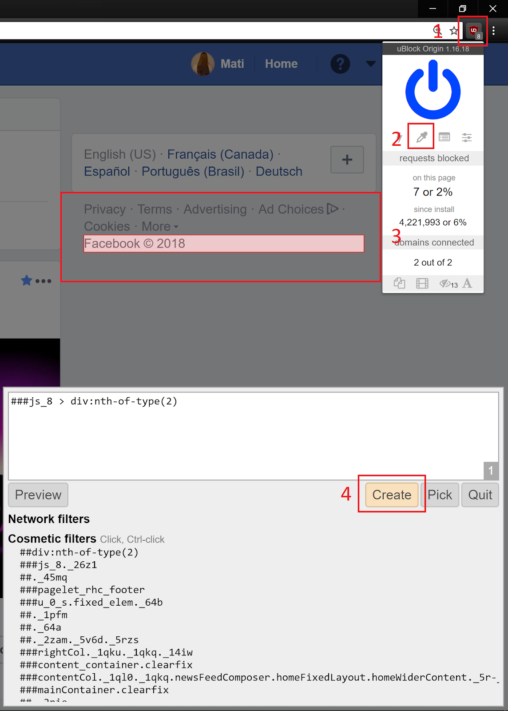

Google Doc | Author: Mati Roy | Quality: incomplete draft | Created: 2018-09-02 | Published: 2019-01-07
How to control your attention on Facebook?
If you don't decide what you want to read, Facebook will.
Here are things you can do to control your attention on Facebook on the technology side (I'm writing something else to cover the social norms side) (in order of importance to me).
Hide content

depending on your ethical views, consider installing an AdBlock*
also use the extension to block any parts you don't like; notably, I suggest blocking suggested content in the right bar (see image)
Social Fixer for Facebook: remove features you don't want from Facebook such as comments and likes, and add new features such as hiding posts you've already seen and removing certain types of posts
Details: restrict some users, block some users, block messages from some users, block app invites from some users, block event invites from some users, block apps, block pages
Other extensions I'm not using currently:
Toolkit For FB by PlugEx: do a massive automated removal (ex.: friends, comments, likes, etc.); notably, you can unfollow all pages and groups (which is different from unlike / quitting a group; it just stops showing them in your feed) so that you can then follow only the few ones that provide useful content
Unsubscribed to all notifications that you wouldn't want to receive.
Install Tab Modifier, and change the name of the tab of any Facebook page to "Facebook" to hide notifications from showing up there
Use adblock to blocks all parts of Facebook you don't like (like suggestions made by Facebook, but also notification counts), as well as the Messenger bar and icon
Select the feature to receive Facebook notifications by email.
Create additional filters on emails, to archive or organize less important notifications
Example: I created filters to put notifications for reacts in a separate folder that doesn't go in my Inbox
Why? Some notifications can't be turned off on Facebook
Messenger
When receiving a Messenger email, ask the person's email if you don't have it, then forward the email to that person with the reply